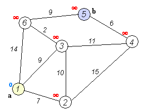

Графы. Разные виды представления графов. Алгоритмы Дейкстры и Флойда: реализация на Python
Раскрашивание графов
Обход вершин графа
Поиск в глубину - ПВГ (Depth First Search - DFS)
Метод обхода графа при котором в первую очередь переход делается из последней посещённой вершины (вершины хранятся в стеке). Обход в глубину получается естественным образом при рекурсивном обходе графа.
# Смежность вершин
inc = {
1: [2, 8],
2: [1, 3, 8],
3: [2, 4, 8],
4: [3, 7, 9],
5: [6, 7],
6: [5],
7: [4, 5, 8],
8: [1, 2, 3, 7],
9: [4],
}
visited = set() # Посещена ли вершина?
# Поиск в глубину - ПВГ (Depth First Search - DFS)
def dfs(v):
if v in visited: # Если вершина уже посещена, выходим
return
visited.add(v) # Посетили вершину v
for i in inc[v]: # Все смежные с v вершины
if not i in visited:
dfs(i)
start = 1
dfs(start) # start - начальная вершина обхода
print(visited)
Поиск в ширину - ПВШ (Breadth First Search - BFS)
Метод обхода графа при котором в первую очередь переход делается из первой вершины, из которой мы ещё не ходили (вершины хранятся в очереди). Обход в глубину получается естественным образов при рекурсивном обходе графа.
Порядок обхода вершин при поиске в ширину
# Смежность вершин
inc = {
1: [2, 8],
2: [1, 3, 8],
3: [2, 4, 8],
4: [3, 7, 9],
5: [6, 7],
6: [5],
7: [4, 5, 8],
8: [1, 2, 3, 7],
9: [4],
}
visited = set() # Посещена ли вершина?
Q = [] # Очередь
BFS = []
# Поиск в ширину - ПВШ (Breadth First Search - BFS)
def bfs(v):
if v in visited: # Если вершина уже посещена, выходим
return
visited.add(v) # Посетили вершину v
BFS.append(v) # Запоминаем порядок обхода
# print("v = %d" % v)
for i in inc[v]: # Все смежные с v вершины
if not i in visited:
Q.append(i)
while Q:
bfs(Q.pop(0))
start = 1
bfs(start) # start - начальная вершина обхода
print(BFS) # Выводится: [1, 2, 8, 3, 7, 4, 5, 9, 6]
Поиск кратчайших путей в графах (объединение разделов по Дейкстре и Флойду)
Алгоритм Дейкстры
Алгоритм Дейкстры (Dijkstra’s algorithm) — алгоритм на графах, находящий кратчайшее расстояние от одной из вершин графа до всех остальных. Алгоритм работает только для графов без рёбер отрицательного веса (без рёбер с отрицательной "длиной").
Примеры формулировки задачиВариант 1. Дана сеть автомобильных дорог, соединяющих города. Некоторые дороги односторонние. Найти кратчайшие пути от заданного города до каждого другого города (если двигаться можно только по дорогам).
Вариант 2. Имеется некоторое количество авиарейсов между городами мира, для каждого известна стоимость. Стоимость перелёта из A в B может быть не равна стоимости перелёта из B в A. Найти маршрут минимальной стоимости (возможно, с пересадками) от Копенгагена до Барнаула.

Идея алгоритма Дейкстры
Алгоритм состоит и 2 повторяющихся шагов:
- Добавление новой вершины ("Расти" - GROW)
- "Релаксация", т.е. пересчёт расстояний до других вершин с учётом добавленной вершины (RELAX).
Более подробное описание:
Обозначения:
Граф $G = (V,E)$, где $V$ - вершины, $E$ - рёбра.
$v_0$ - начальная вершина (от которой мы ищем кратчайшее растояние до всех остальных)
$R_i$ - известное нам расстояние от вершиеы $v_0$ до вершины $i$-ой.
$D$ - множество вершин до которых мы знаем кратчайшее расстояние от $v_0$.
Граф $G=(V,E)$, где $V$ - вершины, $E$ - рёбра.
$v_0$ - начальная вершина
$R_i$ - кратчайщее расстояние от $v_0$ до $i$-ой вершины
$v=v_0$
$D = [v_0]$
Повторять
Инициализация алгоритма:
$D = \{\}$ - пустое множество.
$R_{v_0} = 0$ - расстояние от $v_0$ до $v_0$ = 0.
$v = v_0$ - расти будем от вершины $v$.
Повторять (общий шаг алгоритма)
$GROW(V/D,v)$ - Добавляем вершину $v$ из множества $V/D$ в множество $D$.
$RELAX(V/D,v)$ - пробегаем достижимые из $v$ вершины до которых мы ещё не знаем кратчайшее расстояние и обновляем расстояния $R_i$ от вершины $v$.
$v$ - вершина с минимальным $R$ из множества $V/D$.
Алгоритм
Каждой вершине $v$ из $V$ сопоставим значение $a[v]$ — минимальное известное расстояние от этой вершины до начальной $s$. Алгоритм работает пошагово — на каждом шаге он рассматривает одну вершину и пытается улучшить текущее расстояние до этой вершины. Работа алгоритма завершается, когда все вершины посещены, либо когда вычислены расстояния до всех вершин, достижимых из начальной.
Инициализация. Значение $a[s]$ самой начальной вершины полагается равным 0, значение остальных вершин — бесконечности (в программировании это реализуется присваиванием большого, к примеру, максимально возможного для данного типа, значения). Это отражает то, что расстояния от $s$ до других вершин пока неизвестны.
Шаг алгоритма. Если все вершины посещены, алгоритм завершается. В противном случае, из ещё не посещённых вершин выбирается вершина v, имеющая минимальное расстояние от начальной вершины $s$ и добавляется в список посещенных. Эта вершина находится, используя перебор всех непосещенных вершин. При этом суммируется расстояние от старта до одной из посещенных вершин u до непосещенной $v$. Для первого шага $s$ - единственная посещенная вершина с расстоянием от старта (то есть от себя самой), равным 0.
const MaxN = 1000; { Максимальное количество вершин }
var
a : array [1..MaxN] of extended; { Найденные кратчайшие расстояния }
b : array [1..MaxN] of boolean; { Вычислено ли кратчайшее расстояние до вершины }
p : array [1..MaxN,1..MaxN] of extended; { Матрица смежности }
begin
{ До всех вершин расстояние - бесконечность }
for i := 1 to n do a[i] := Inf;
a[s] := 0.0; { И только до начальной вершины расстояние 0 }
for i := 1 to n do b[i] := false; { Ни до одной вершины мы ещё не нашли кратчайшее расстояние }
j := s; { Добавляемая вершина (стартовая) }
repeat
l := j;
b[l] := True; { Добавили вершину }
{ Оббегаем все вершины смежные с только что добавленной }
min := Inf; { Будем искать вершину с минимальным расстоянием от стартовой }
for i := 1 to n do
if not b[i] then begin
{ Если есть путь короче чем известный в i-ую вершину через l-тую, то запоминаем его }
if a[i] < a[l] + p[l][i] then a[i] := a[l] + p[l][i];
{ Если расстояние в эту вершину минимально, то запоминаем её как следующий кандидат на добавление }
if a[i] < min then begin min := a[i]; j := i; end;
end;
until min = Inf;
for i := 1 to n do
if a[i] >= Inf then
write('-1 ') { Вершины нельзя достичь из начальной }
else
write(a[i],' '); { Расстояние от начальной вершины = a[i] }
end;
Алгоритм Флойда
Алгоритм Флойда — Уоршелла — динамический алгоритм для нахождения кратчайших расстояний между всеми вершинами взвешенного ориентированного графа. Разработан в 1962 году Робертом Флойдом и Стивеном Уоршеллом.
Пусть вершины графа пронумерованы от 1 до $n$ и введено обозначение $d_{ij}^k$ для длины кратчайшего пути от $i$ до $j$, который кроме самих вершин $i,\; j$ проходит только через вершины $1 \ldots k$. Очевидно, что $d_{i j}^{0}$ - длина (вес) ребра $(i,\;j)$, если таковое существует (в противном случае его длина может быть обозначена как $\infty$)
Существует два варианта значения $d_{i j}^{k},\;k \in \mathbb (1,\;\ldots,\;n)$:
- Кратчайший путь между $i,\;j$ не проходит через вершину $k$, тогда $d_{i j}^{k}=d_{i j}^{k-1}$
- Существует более короткий путь между $i,\;j$, проходящий через $k$, тогда он сначала идёт от $i$ до $k$, а потом от $k$ до $j$. В этом случае, очевидно, $d_{i j}^{k}=d_{i k}^{k-1} + d_{k j}^{k-1}$
Таким образом, для нахождения значения функции достаточно выбрать минимум из двух обозначенных значений.
Тогда рекуррентная формула для $d_{i j}^k$ имеет вид:
$d_{i j}^0$ - длина ребра $(i,\;j)$
$d_{i j}^{k} = \min (d_{i j}^{k-1},\; d_{i k}^{k-1} + d_{k j}^{k-1})$
Алгоритм Флойда - Уоршелла последовательно вычисляет все значения $d_{i j}^{k}$, $\forall i,\; j$ для $k$ от 1 до $n$. Полученные значения $d_{i j}^{n}$ являются длинами кратчайших путей между вершинами $i,\; j$.
for k := 1 to n do { k - промежуточная вершина }
for i := 1 to n do { из i-ой вершины }
for j := 1 to n do { в j-ую вершину }
W[i][j] = min(W[i][j], W[i][k] + W[k][j]);
Алгоритм Прима
Алгоритм Прима — алгоритм построения минимального остовного дерева взвешенного связного неориентированного графа. Алгоритм впервые был открыт в 1930 году чешским математиком Войцехом Ярником, позже переоткрыт Робертом Примом в 1957 году, и, независимо от них, Э. Дейкстрой в 1959 году.
Построение начинается с дерева, включающего в себя одну (произвольную) вершину. В течение работы алгоритма дерево разрастается, пока не охватит все вершины исходного графа. На каждом шаге алгоритма к текущему дереву присоединяется самое лёгкое из рёбер, соединяющих вершину из построенного дерева, и вершину не из дерева.
Вход: Связный неориентированный граф $G(V,E)$
Выход: Множество $T$ рёбер минимального остовного дерева
Обозначения:
- $d_i$ — расстояние от $i$-й вершины до построенной части дерева
- $p_i$ — предок $i$-й вершины, то есть такая вершина $u$, что $(i,u)$ самое короткое рёбро соединяющее $i$ с вершиной из построенного дерева.
- $w(i,j)$ — вес ребра $(i,j)$
- $Q$ — приоритетная очередь вершин графа, где ключ - $d_i$
- $T$ — множество ребер минимального остовного дерева
Псевдокод:
$T \gets $ {}
Для каждой вершины $i \in V$: $d_i \gets \infty$, $p_i \gets nil$
$d_1 \gets 0$
$Q \gets V$
$v \gets\ Extract.min(Q) $
Пока $Q$ не пуста:
Для каждой вершины $u$ смежной с $v$:
Если $u \in Q$ и $w(v,u) < d[u]$: $d_u \gets w(v,u)$, $p_u \gets v$
$ v \gets Extract.Min(Q)$
$ T \gets T+(p[v],v)$
Поиск особых путей в графах
Поиск эйлерова цикла в графе
Поиск гамильтонова цикла в графе
Топологическая сортировка
Реализация через DFS.